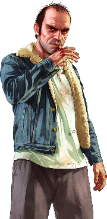
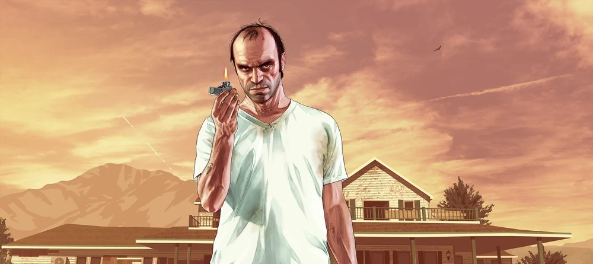

Trevor Philips is an unpredictable, psychopathic former military pilot and Michael’s ex-partner-in-crime.
Living in the desolate region of Blaine County, Trevor runs a chaotic drug and weapons business while indulging in his violent tendencies.
Despite his volatile nature, Trevor possesses a twisted sense of loyalty and cunning, making him a dangerous yet resourceful ally in the group's criminal escapades.

Unhinged, Unstoppable, Unforgettable
Trevor Philips, born and raised in the Canadian wilderness, is an erratic and volatile criminal with a penchant for violence and chaos. A former military pilot turned drug lord, Trevor embodies a destructive nature, living on the fringes of society where rules mean nothing. His explosive temper and unpredictability make him both a fearsome ally and a dangerous foe.
Despite his violent tendencies, Trevor possesses a cunning mind and an entrepreneurial spirit. He runs Trevor Philips Enterprises, a small but ruthless drug and arms trafficking operation in Sandy Shores, Blaine County. His chaotic operations are built on raw determination and ambition, with loyalty being rare but fiercely upheld.
Trevor’s fractured relationship with Michael De Santa is a pivotal point in his story. Their reunion resurfaces old betrayals, leading to conflicts, unexpected camaraderie, and moments of dark humor. Trevor also forms a unique bond with Franklin Clinton, seeing him as a bridge between chaos and purpose.
Trevor is the wildcard of the trio, bringing unrestrained intensity to missions and decisions. His character explores themes of freedom, destruction, and an unfiltered search for meaning. Trevor’s journey is one of anarchy and unapologetic self-expression, making him one of the most unforgettable characters in Los Santos.

Trevor Philips as visible on the loading screen of the game.
They call me crazy, but I call myself free.
Trevor Philips
Trevor’s defiant pride in his unorthodox lifestyle reflects his belief that madness is merely another word for liberation.